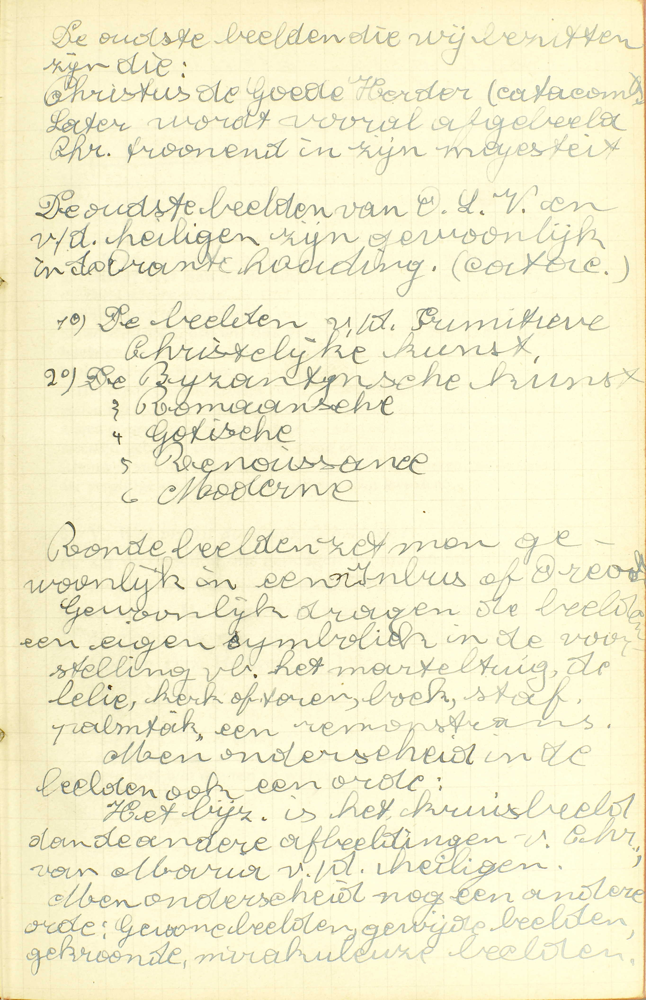

BEKNOPTE VERKLARING
van de
MECHELSE CATECHISMUS
ten gebruike van het middelbaar onderwijs
DERDE DEEL
–
TWEE EN TWINTIGSTE LES
Van het vereren van de Heiligen, van de heilige beelden en van de reliquieën
| Het vereren | van de Heiligen | Tegenover het Eerste Gebod | Is het tegen de eer Gods, dat wij de Heiligen eren of aanroepen? | |||
| Wat onderscheid is er tussen het gebed, dat wij God, en hetgeen dat wij zijn Heiligen opdragen? | ||||||
| Ten opzichte van de kennis, die zij ervan hebben | Hoe weten de Heiligen wat wij begeren of tot hun eer doen? | |||||
| van heilige beelden | Tegenover het Eerste Gebod | Misdoen de Katholieken tegen het Eerste Gebod, als zij beelden maken? | ||||
| Is het kwaad, dat men vóór de beelden knielt, licht ontsteekt, of bidt? | ||||||
| Ten opzichte van de voordelen daarvan | Wat profijt doen ons de beelden? | |||||
| van reliquieën | Wat reliquieën zijn | Wat heet gij reliquieën van de Heiligen? | ||||
| Waarom wij ze eren | Waarom eren wij de reliquieën? | |||||
Is het tegen de eer Gods, dat wij de Heiligen eren of aanroepen?
Neen; want wij eren die niet als goden, maar als vrienden en dienaars van de waarachtige God
Deze les toont nog eens te meer dat onze catechismus gemaakt werd met een Apologetisch doel (geloofsverdediging). De ketters van de 16ᵉ eeuw bestreden geweldig de katholieke beelden en heiligenverering. Tegen de valse begrippen en vooroordelen van de ketters werd deze les opgesteld. Het vereren van de heiligen is zeker iets heel natuurlijks: wij trachten immers voorsprekers te hebben onder digenen die zeker reeds de vrienden van God zijn. Sommige heiligen worden bijzonder vereerd door een persoon, kerk, gemeente, stad, streek, land en bedevaartsoord. V. Het Eerste Gebod belast ons één God alleen te erkennen, te aanroepen en te dienen; nu, is het tegen de eer Gods, of strijdt het met dit Kerste Gebod: dat wij de Heiligen, de Engelen en de Gelukzaligen, — eren, over hun verhevenheid loven, — of aanroepen: hun bijstand of hun hulp afsmeken?
A. Neen, dat strijdt tegen dit Gebod niet; — want wij eren die niet als goden: wij erkennen, aanroepen en dienen die niet als de scheppers en oppermeesters van hemel en aarde; maar als vrienden en dienaars van de waarachtige God: maar als personen die met de enige waren God, bij middel van de bovennatuurlijke gaven, door vriendschap verbonden, en Hem onderworpen zijn. — Moesten wij hen erkennen, aanroepen en dienen als goden, dan zouden wij ons aan een zonde tegen het Eerste Gebod schuldig maken, namelijk, aan de zonde van afgoderij.
Wat onderscheid is er tussen het gebed, dat wij God, en hetgeen dat wij zijn Heiligen opdragen?
Dat wij, God aanbiddende, Hem bekennen te wezen onze oppersten Heer en de fontein van alle goed; en daarom begeren wij, dat Hij ons geve hetgene wij verzoeken; maar de Heiligen kennen wij als vrienden en voorsprekers, die bij God met ons en voor ons bidden
V. De zin van de vraag is: welk verschil bestaat er tussen de manier waarop wij God, en die waarop wij de Heiligen door het gebed iets vragen.
A. Er bestaat een dubbel verschil: een eerste in de wijze van erkenning, en een ander, in de wijze van smeeking.
Wat de wijze van erkenning betreft, God aanbiddende, bekennen wij Hem te wezen onze oppersten Heer en de fontein van alle goed: als wij God bidden, erkennen wij Hem als de enige ware God, als het waar Opperwezen, dat door zich zelf de oorsprong is van alle goed, en, door zijn eigen macht, ons alle goed kan vergunnen; — maar de Heiligen kennen wij als vrienden en voorsprekers, die bij God met ons en voor ons bidden, maar de Heiligen, wanneer wij een gebed tot hen sturen, aanzien wij, niet als onze opperste heren en de fonteinen van alle goed, maar als vrienden van God en van ons, die bij God onze zaak bepleiten of voor ons ten beste spreken, met hun gebeden bij de onze te voegen en met voor ons gebeden te storten, als wij niet bidden.
Wat de wijze van smeeking aangaat, daar wij God als onze oppersten Heer en de fontein van alle goed erkennen, daarom begeren wij, dat Hij ons geve hetgene wij verzoeken; daarom vragen wij van Hem, dat Hij door zich zelf ons zou geven hetgene wij verzoeken; — maar van de Heiligen kunnen wij maar vragen, dat zij ons, hetgene wij begeren, van God zouden bekomen, aangezien dat wij hen erkennen, niet als goden, maar als vrienden en voorsprekers, die bij God met ons en voor ons bidden.
Dat de Heiligen voor ons bidden, is klaar bevestigd door de geschiedenis van Judas de Machabeër, aan wie de opperpriester Oniasen de profeet Jeremias verschenen zijn als voor de Joden biddende en hen beschermende.
Hoe weten de Heiligen wat wij begeren of tot hun eer doen?
Zij weten dit klaarlijk door God, en zien het in de goddelijke natuur
A. Zij weten dit klaarlijk, op een volmaakte wijze, — door God, niet met het door hun natuurlijke krachten te zien of te horen, maar door de tussenkomst van God, — en zien het in de goddelijke natuur: weten het door God, met de goddelijke natuur aanschijn aan aanschijn te aanschouwen.
God aanschouwende, zien zij zijn oneindige kennissen, en in die kennissen treffen zij aan hetgene wij tot hun eer doen, (41ᵉ les, v. 7.)
Misdoen de Katholieken tegen het Eerste Gebod, als zij beelden maken?
Neen; want zij maken de beelden uitsluitend tot gedachtenis van God of van zijn Heiligen
V. Het Eerste Gebod verbiedt gesneden beelden of gelijkenissen te maken: zondigen de Katholieken tegen dat Gebod, als zij beelden maken van God of van zijn Heiligen?
A. Neen, zij zondigen er niet tegen; want zij maken de beelden, niet om ze als goden te erkennen, te aanroepen en te dienen, maar uitsluitend tot gedachtenis van God of van zijn Heiligen, d.i. om ons, door het voorstellen van die beelden, op God of op zijn Heiligen te doen denken. — Maakten zij beelden, om ze als goden te doen vereren, dan zouden zij een zonde tegen het Eerste Gebod bedrijven.
Men bemerke dat het Eerste Gebod het maken van beelden of gelijkenissen slechts verbiedt, voor zoveel dat zou gedaan worden, om ze als goden te doen vereren, gelijk het bij de Heidenen geschiedt.
Goden de Engelen worden onder lichamelijke gedaanten voorgesteld, niet om te betekenen dat zij een lichaam hebben, maar omdat er geen middel is om zonder lichamelijke gedaante een geest te verbeelden.
God de Vader wordt gewoonlijk voorgesteld onder de gedaante van een grijsaard, omdat Hij zich even aan Daniël vertoond heeft; God de Zoon wordt verbeeld met de menselijke natuur, die Hij wezenlijk aangenomen heeft, alsook onder de gedaante van een lam, omdat Hij onder die vorm aan de Apostel Joannes is verschenen en in de H. Schrift dikwijls onder die naam voorkomt; en God de H. Geest, onder de vorm van een duif of van vurige tongen, omdat Hij zich ouder deze twee gedaanten heeft vertoond. De alwetendheid en de alomtegenwoordigheid van God stelt men zeer dikwijls voor bij middel van een stralend oog op een driehoekig plan afgeschilderd.
Is het kwaad, dat men vóór de beelden knielt, licht ontsteekt, of bidt?
Neen; want deze eer geschiedt, niet aan de beelden, maar aan God of zijn Heiligen, die wij ons voorstellen door het aanzien van de beelden.
 De oudste beelden die wij bezitten zijn die: Christus de Goede Herder (catacomben), later wordt vooral afgebeeld Christus tronend in zijn majesteit. De oudste beelden van O.L.V. en van de heiligen zijn gewoonlijk in de Orante-houding (catacomben).  V. Genomen gelijk in deze vraag, is knielen een natuurlijk teken van onderwerping en van eerbied; ook licht ontsteken is van natuur wel geschikt om de eer te erkennen waardoor iemand schittert, om ons Geloof te betekenen, dat een licht is voor ons verstand; onze Hoop. die ons als een licht in de duisternissen verheugt; onze Liefde, die als een vuur in onze harten brandt. Wat men door bidden betekent, moet niet gezegd worden. — De Catechismus vraagt of knielen, licht ontsteken of bidden, wanneer dit vóór de beelden geschiedt. niet in strijd is met het Eerste Gebod, dat verbiedt beelden of gelijkenissen te aanbidden of godsdienstig te eren. (20ᵉ les, vr. 10.)
V. Genomen gelijk in deze vraag, is knielen een natuurlijk teken van onderwerping en van eerbied; ook licht ontsteken is van natuur wel geschikt om de eer te erkennen waardoor iemand schittert, om ons Geloof te betekenen, dat een licht is voor ons verstand; onze Hoop. die ons als een licht in de duisternissen verheugt; onze Liefde, die als een vuur in onze harten brandt. Wat men door bidden betekent, moet niet gezegd worden. — De Catechismus vraagt of knielen, licht ontsteken of bidden, wanneer dit vóór de beelden geschiedt. niet in strijd is met het Eerste Gebod, dat verbiedt beelden of gelijkenissen te aanbidden of godsdienstig te eren. (20ᵉ les, vr. 10.)
A. Neen, dit strijdt tegen het Eerste Gebod niet; — want deze eer geschiedt, niet aan de beelden: deze eer wordt bewezen, niet aan de beelden, als waren zij God of de Heiligen zelf, en zoo, door hun eigen hoedanigheden, die eer waardig, — maar aan God of zijn Heiligen, die wij ons voorstellen door het aanzien van de beelden, maar aan God of zijn Heiligen, op wie wij denken met de beelden te aanschouwen.
Het Eerste Gebod verbiedt enkel de beelden en de gelijkenissen als goden te eren, en bijgevolg is onze verering van de beelden en gelijkenissen er geenszins mee in strijd. — God zelf heeft aan Mozes in de woestijn geboden een koperen slang op te richten, en aan het aanschouwen van die slang de gunst vastgehecht, te genezen van de steken van de vergiftige slangen die de Israëlieten toen kwelden.
Wat profijt doen ons de beelden?
Zij verversen ons geheugen en maken ons indachtig hetgeen wij wel dienen te weten; zij vertonen ons het leven van de Heiligen, en de manier, op dewelke zij tot de glorie gekomen zijn; zij verwekken onze liefde tot God en zijn Heiligen; zij helpen ons om aandachtiglijk te bidden
A. Zij geven ons vier profijten of voordelen:
1° Zij verversen ons geheugen en maken ons indachtig hetgeen wij wel dienen te weten, d. i. zij maken ons geheugen werkstellig om ons in het gedacht te brengen hetgeen wij wel moeten kennen, en veel moeten overwegen, te weten, de leer van het Geloof. Zo b.v. maakt het Kruisbeeld ons het mysterie van de Menswording en dat van onze Verlossing indachtig.
2° Zij vertonen ons het leven van de Heiligen, en de manier, op dewelke zij tot de glorie gekomen zijn, d. í. zij stellen ons vóór ogen de deugden die de Heiligen geoefend, en de schoone daden die zij verricht hebben, alsmede de wijze op dewelke zij tot de heiligheid en derhalve tot de hemel gekomen zijn. Zo toont ons het beeld van de H. Paulus met zijn zweerd, hoe die heilige Apostel, liever dan God tevergrammen, het leven door het zweerd heeft willen verliezen.
3° Zij verwekken onze liefde tot God en zijn Heiligen, i.a.w. zij verlevendigen onze liefde tot God en zijn Heiligen, en onze iever om wel te leven, aangezien dat zij ons het leven van de Heiligen en hun glorie vóór ogen leggen.
4° Zij helpen ons om aandachtiglijk te bidden: zij dienen om onze aandacht in het gebed op God of op de Heiligen te vestigen, en doen dit met aan onze zinnen, die op onze aandachtigheid een zo groten invloed hebben, God of de Heiligen voor te stellen.
Men bemerke, dat geheel deze leer over de verering van de beelden ook geldt voor de mirakuleuze beelden, d.i. voor de beelden, welke die bijzonderheid hebben. dat God, ter gelegenheid van hun verering, dikwijls mirakelen doet. Als wij zulke beelden eren, geschiedt ook deze eer niet aan de beelden, maar aan God of zijn Heiligen die wij ons voorstellen door het aanzien van de beelden. — God doet dikwijls mirakelen ter gelegenheid van de verering van een zeker beeld, om daardoor belevaarten te doen ontstaan en de uitwendige godsdienst te bevorderen.
Wat heet gij reliquieën van de Heiligen?
De lichamen, gebeenten, kleren en al wat de heilige mensen ons hebben achtergelaten, als zij van hier gescheiden zijn
De bijzonderste reliquieën zijn dezen die van Christus zelf zijn: het H. Bloed en het H. Kruis, de H. Rok van Trier en de H. Lijkwade van urijn, het bovenkleed van Jezus te Argenteuil.  Trouwens wij vereren de reliquieën van de heiligen niet omdat zij innerlijk iets heiligs zijn, maar omdat zij toebehoren aan personen die om hun heiligheid vererenswaardig zijn. Het is dan ook van minder belang dat sommige reliquieën vals zijn. Immers de verering van de reliquie is een relatieve en gaat eigenlijk naar de persoon van de heilige. V. Reliquieën, betekent letterlijk overblijfsels.
Trouwens wij vereren de reliquieën van de heiligen niet omdat zij innerlijk iets heiligs zijn, maar omdat zij toebehoren aan personen die om hun heiligheid vererenswaardig zijn. Het is dan ook van minder belang dat sommige reliquieën vals zijn. Immers de verering van de reliquie is een relatieve en gaat eigenlijk naar de persoon van de heilige. V. Reliquieën, betekent letterlijk overblijfsels.
A. De lichamen, de hele lichamen, — gebeenten, die van het lichaam, dat tot verrotting is overgegaan, zijn overgebleven, — kleren, die hun op aarde gediend hebben, — en al wat de heilige mensen ons hebben achtergelaten, als zij van hier gescheiden zijn, zoals hun werktuigen, hun meubelen, de instrumenten van hun dood en allerhande zaken, waarmee zij in nauwe betrekking zijn geweest.
Dat de reliquieën, die in de kerken ter verering voorgesteld worden, wezenlijk echt zijn, weten wij niet met de zekerheid van het Geloof; maar de grote zorg van de Pausen en bisschoppen voor die zaak, laat ons niet toe daaraan te twijfelen.
Waarom eren wij de reliquieën?
Ten eerste, omdat het panden zijn en gedenkenissen, die ons van onze goede en grote vrienden zijn achtergelaten; ten tweede, omdat die lichamen tempels zijn geweest van de H. Geest; ten derde, omdat zij werktuigen zijn geweest van alle deugden; ten vierde, omdat zij eens verheven zullen worden bij God.
A. Wij vereren de reliquieën om deze vier redenen:
Ten eerste, omdat het panden zijn en gedenkenissen, die ons van onze goede en grote vrienden zijn achtergelaten, i. a. w. omdat het kostelijke overblijfsels zijn, en middelen om op de Heiligen te denken, welke zij, onze goede vrienden uit hoofde van hun machtige voorspraak en onze grote vrienden door hun overgrote liefde tot ons, bij hun afsterven ons hebben achtergelaten. — Wij eerbiedigen de panden en gedenkenissen van onze ouders en „kennissen; het betaamt dus dat wij nog veel meer de reliquieënder Heiligen eerbiedigen.
Ten tweede, omdat die lichamen tempels zijn geweest van de H. Geest, i. a. w. omdat de drie Personen van de H. Drievuldigheid in geheel de persoon van de Heiligen, en bijgevolg, als zij op aarde waren, ook in hun lichaam, door de heiligmakende gratie op een bijzondere manier tegenwoordig zijn geweest en daarin, als ’t ware in hun tempel, hebben gewoond. Als bovennatuurlijke gave brengt de heiligmakende gratie een bijzondere tegenwoordigheid Gods mede, en daar zij een bijblijvende gave is, maakt zij dat die bijzondere tegenwoordigheid ook bijblijvend is, en dat God bijgevolg in de mens woont. (Zie 1ᵉ les, vr. 6.) — Deze tegenwoordigheid wordt de H. Geest bijzonder toegeschreven, omdat zij een werk van liefde uitmaakt.
Deze tweede reden is zeer gegrond, daar iedereen die plaatsen natuurlijk vereert, waar God is verschenen of iets bijzonders heeft uitgewerkt.
Ten derde, omdat zij werktuigen zijn geweest van alle deugden, d.w.z. omdat de Heiligen door die lichamen alle deugden geoefend, of alle goede werken gedaan hebben. — Hier op aarde hebben wij grote achting voor al de werktuigen die gediend hebben tot het behalen van een zegepraal of tot het verrichten van een grote daad; dus behoort het ongetwijfeld, dat wij ook de lichamen van de Heiligen eren, daar zij gediend hebben om werken te doen, die alle aardse zaken oneindig te boven gaan.
Ten vierde, omdat zij eens verheven zullen worden bij God, i. a. w. omdat die lichamen op het einde van de wereld heel klaar en schoonblinkend, licht, subtiel en onlijdelijk zullen verrijzen en verheven worden tot in de hemel bij God. — Indien God die lichamen tot een zo grote eer bestemd heeft, is het ten hoogste rechtvaardig dat ook wij er de grootste achting voor hebben.
God heeft door menigvuldige mirakelen de eredienst der reliquieën willen bevorderen. Zo heeft Hij, door de aanraking van de beenderen van de profeet Eliseüs, een dode verwekt, en, door de mantel van Elias, het water van de Jordaan gescheiden. De doeken, die het lichaam van de H. Paulus hadden aangeraakt, genazen de zieken, en vele kranken, die slechts van Petrus’ schaduwe overlommerd werden, bekwamen de gezondheid.
VRAGEN
 Ook voor ons is de heiligheid, zelfs de grote heiligheid, te bereiken. “Wat die mannen en die vrouwen gekund hebben, waarom zou ik het niet kunnen?” (Sint Augustinus) “Ik wil een heilige worden” (Sint Johannes Bergmans)
Ook voor ons is de heiligheid, zelfs de grote heiligheid, te bereiken. “Wat die mannen en die vrouwen gekund hebben, waarom zou ik het niet kunnen?” (Sint Augustinus) “Ik wil een heilige worden” (Sint Johannes Bergmans)  Onze godsdienstkennis mag dus niet alleen blijven bij de theorie, maar moet omgezet worden in praktijk, met andere woorden: moet beleefd worden. Welk is het voorwerp van deze les? — In hoeveel delen wordt zij verdeeld? — Wat leert de Catechismus in ieder deel?
Onze godsdienstkennis mag dus niet alleen blijven bij de theorie, maar moet omgezet worden in praktijk, met andere woorden: moet beleefd worden. Welk is het voorwerp van deze les? — In hoeveel delen wordt zij verdeeld? — Wat leert de Catechismus in ieder deel?
In de vraag: is het tegen de eer Gods, dat wij de Heiligen eren of aanroepen; a) wat betekenen de woorden: is het tegen de eer Gods? — b) wie zijn te verstaan door de Heiligen? — c) wat is eren, aanroepen? — Bewijs, met de woorden van de Catechismus, dat het vereren en aanroepen van de Heiligen niet strijdt met het Eerste Gebod. — Leg die woorden uit. — Wanneer zou die verering en aanroeping met het Eerste Gebod strijden?
In hoeveel en in welke punten verschillen de manier op dewelke wij God, en die op dewelke wij de Heiligen aanroepen? — Stel, volgens de Catechismus, deze verschillen voor, en leg de woorden van de Catechismus uit.
Hoedanig is, volgens de Catechismus, de kennis welke de Heiligen hebben van hetgene wij tot hun eer doen? — Zeg ook, wederom met de Catechismus, door welke middel zij het weten, en op welke wijze zij door dezen middel die kennis hebben. — Verklaar uw antwoord.
Geef de reden waarom de Catechismus vraagt: misdoen de Katholieken tegen het Eerste Gebod als zij beelden maken. — Bewijs, met de woorden van de Catechismus, dat zij daardoor tegen het Eerste Gebod niet misdoen. — Verklaar die woorden. — In welk geval zou het maken van beelden tegen het Eerste Gebod strijden? — In welke zin verbiedt het Eerste Gebod het maken van beelden en gelijkenissen? — Hoe mogen God en de Engelen, die enkele geesten zijn, onder lichamelijke gedaanten voorgesteld worden, gelijk het in de H. Kerk geschiedt? — Hoe wordt God de Vader, God de Zoon, God de H. Geest, de alwetendheid en alomtegenwoordigheid van God gewoonlijk verbeeld?
Geef de reden waarom de Catechismus vraagt: Is het kwaad dat men vóór de beelden knielt, licht ontsteekt, of bidt? — Verklaar hoe het knielen en het licht ontsteken tekenen van verering zijn. — Toon, met de woorden van de Catechismus, dat de verering van de beelden met het Eerste Gebod niet strijdt. — Leg uw antwoord uit. — In welke zin verbiedt het Eerste Gebod de beelden te eren?
Hoeveel en welke profijten geven ons de beelden? — Leg ze alle uit, en bewijs in ’t kort, dat zij wezenlijk uit het gebruik van de beelden vloeien. — Wat zijn mirakuleuze beelden? — Als wij vóór mirakuleuze beelden knielen, licht ontsteken of bidden, aan. wie geschiedt dan de eer die wij bewijzen? — Waarom wil God dat er mirakuleuze beelden zijn?
Wat betekent het woord reliquieën? — Hoeveel dingen komen onder de naam van religuieën? — Leg deze alle uit. — Met welke zekerheid weten wij, dat de reliquieën die in de kerken ter verering voorgesteld worden, wezenlijk echt zijn?
Om hoeveel en om welke redenen eren wij de religuieën? — Leg ze alle uit. — Bewijs dat zij alle geldig zijn.